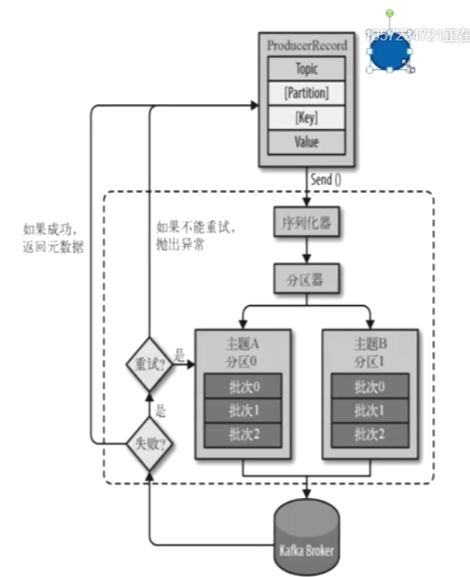

kafka
优势
- 天生支持分布式
- 磁盘存储数据 持久化（但是有保存策略，包括时间和空间）
- 流处理模式
为什么选择：
- 多生产者和多消费者模式
- 天生持久化
- 高伸缩性
- 高性能
应用场景：
- 活动追踪
- 传递消息
- 收集指标和日志
- 提交日志
- 流处理
基础部分
- 消息: 字符数组
- 键: 可选项
- 批次: 提高效率 (权衡: 时间延迟与吞吐量之间的关系)
- 主题: 数据库中的表
- 分区: 相当于分表
- 生产者: 写消息
- 消费者: 拉取消息
- 偏移量: 每个分区消费到的index
- 消费群组: 每个分区只能被消费群组的一个消费者消费, 但是一个消费者可以消费多个分区. 如果消费者down了, 则由其他的消费者分担
- broker和集群: 集群复制, 消息首先传递到每个Broker的特定主题的特点分区的首领, 然后其他的Broker的相同主题的相同分区获得一份复制, 如果首领节点down了, 则其他节点充当首领

Kafka对硬件的要求
- 磁盘：影响最大的是生产者，读写速度和空间大小（每个分区，多个目录，保存几天，几个副本）
- 内存：页面缓存，影响到消费者性能
- 网路：影响生产者写入和消费者读取，影响副本的复制
- CPU：计算压缩，要求不高
Kafka配置
- broker.id 集群需要配置标示broker的唯一标示
- zookeeper.connect 链接zk的地址，集群可以用‘，’隔开
- zookeeper.connect.timeout.ms 超时时间，毫秒
- log.dirs 数据存储位置, 多个用‘，’隔开, 并且遵循最少使用原则
- num.recovery.threads.per.data.dir 每个目录的恢复线程数量 在启动或者关闭Kafka的时候有用
- auto.create.topics.enable 自动创建主题
- num.partitions 新建主题的默认分区数量，创建时只能比这个数大，不能小
- log.retention.hours 日志保留的小时数，超过会被删除, 跟最后修改时间有关
- log.retention.bytes 每个分区的最大大小，超过的数据会被删除，一般不设置
- log.segment.bytes 日志片段的大小，超过会新建分片
- log.retention.check.interval.ms 检查间隔
- message.max.bytes 消息的最大字节数 消费者和生产者要保持一致, 切不要大于fetch.message.max.bytes.
- fetch.message.max.bytes 消费者所能获取的最大字节数
负载均衡
- 消息带key，按照key值来取模均衡
- key值固定，不负载均衡
- key为空，分区器散列
生产者Java API

失败重试机制：
- 连接错误
- 首领down了
非失败重试的情况，直接返回异常
发送的方式：
- 发送并忘记（还是会重试，但是有时候会丢失消息）
- 同步发送
- 异步发送
生产者参数设置：
- acks：消息确认机制：
- 1 必须首领也确认
- 0 不需要确认
- all 需要首领确认，从机也确认
- batch.size: 批次大小 默认为16384
- linger.ms: 批次发送前的等待时间，默认为0
- max.request.size: 生产者默认发送请求的最大大小，不能超过message.max.bytes, 否则发送数据丢失
- max.in.flight.requests.per.connection: 由于失败重试机制导致的消息顺序不能保证，将此值设置为1时，可以确保失败重试时，其他消息不能发送 严重损耗生产者性能，除非非要保证消息顺序一致性
- bufffer.memory: 生产者内存缓冲区大小
- retries：失败重试次数，默认为Integer的最大值
- request.timeout.ms: 客户端等待请求响应的最大时间
- max.block.ms: 最长阻塞时间，超过则抛出异常
- compression.type: 压缩类型 none gzip snappy 默认无压缩
- partitioner.class 自定义分区器的全限定名
自定义序列化器和反序列化器:
- 序列化器需要实现serilizer接口
- 反序列化器需要实现deserilizer接口
消费者
消费者群组的意义:
- 消费速率的问题 消费者往往比生产者慢